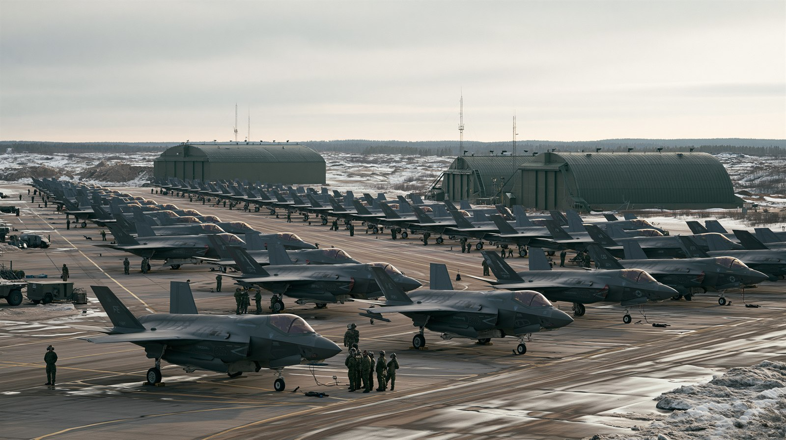

01 引き金：アメリカの関与縮小
2025年12月4日に公表されたアメリカの新たな国家安全保障戦略は、「アメリカ第一」を中核に据えた。
そこでは、能力ある同盟国が主たる責任を負える地域では、アメリカは存在を縮小すると明言された。
名指しの撤退ではないものの、欧州にとっては「自動的にアメリカが守ってくれる時代」の終わりを意味する。
これに先立ち、2025年のハーグでのNATO首脳会議は、国防費を2035年までに国内総生産比5%へ引き上げる目標で合意した
（うち中核的な軍事能力に3.5%）。欧州とカナダの国防費は2025年に前年比およそ20%増え、全加盟国が2%の基準に到達する見込みだ。
ただし専門家が口を揃えるのは、これが「アメリカからの分離」ではなく「依存リスクの低減」だという点だ。
欧州はアメリカと決別するのではなく、いざという時に自律的に動ける幅を広げようとしている。
02 欧州の枠組み：ReArm Europe と共同調達
欧州連合は、加盟国がばらばらに装備を買う非効率を改め、共同で調達・投資する仕組みを整えた。中心が「ReArm Europe（即応2030）」計画だ。
€8,000億
ReArm Europe全体の防衛投資規模。EU共同債1,500億ユーロ＋各国支出6,500億ユーロ（財政ルールの例外扱い）で構成。
€1,500億
共同調達ローン制度「SAFE」（2025年5月採択）。長期・低利の融資で大規模な共同調達を支援。ウクライナや候補国も参加可能。
即応ロードマップ2030（2025年10月）の4本柱：
東部側面の監視、ドローン防衛、防空（エアシールド）、宇宙監視（スペースシールド）。
数十年の軍縮で生じた能力の穴を、2020年代末までに埋めることを狙う。

装備の近代化は進む一方、即応性・兵站・人員の整備は道半ばとされる。各国は共同調達でこの穴を埋めようとしている。※イメージ画像（生成AI）
03 主要国の動き
ドイツ
歴史的転換
2025年3月、メルツ政権が憲法の「債務ブレーキ」から国防費を除外。国防費は2025年の860億ユーロから2026年に約1,082億ユーロへ、2029年には1,520億ユーロを計画。F-35導入で第5世代空軍へ。戦後の抑制を決定的に手放した。
ポーランド
最前線・最大比率
「欧州最大の陸軍」を国家目標に掲げる。2025年の国防費はGDP比4.5%でNATO最高。2016年比で207%増という急拡大で、東部前線の主役を自任する。
フランス
核の傘
欧州連合で唯一の核保有国として「前方抑止」を提唱。ノルウェー・ドイツ・ポーランドなど9カ国が仏の核抑止の計画・演習に関与し、「欧州版・核の傘」の輪郭が見え始めた。
バルト三国
危機の最前線
ロシアと国境を接し、最も切迫した脅威認識を持つ。NATO東部側面の防衛強化と、ドローン・領空侵犯などのハイブリッド攻撃への対処が日常の課題に。
ハンガリー
懐疑から転換
オルバン政権下では対ウクライナ支援を繰り返し拒否し、26カ国対1の構図を生んだ。2026年春の政権交代後、欧州連合・NATOとの関係を「再起動」し、凍結されていた拠出を解除した。
イギリス
欧州連合外の柱
欧州連合を離脱したが、防衛では大陸の主要な柱であり続ける。共同調達への参加や、フランスとともに欧州の核・通常戦力を支える役割を担う。
04 タイムライン
2025年3月
ドイツ、憲法の債務ブレーキから国防費を除外
メルツ政権が連邦議会の承認を得て、長年にわたり国防投資を縛ってきた財政の上限を国防費について解除。大規模・持続的な再軍備への道を開いた。
歴史的な財政転換
欧州最大の国防予算へ
2025年5月
欧州連合、共同調達ローン「SAFE」を採択
最大1,500億ユーロの融資で加盟国の共同調達を後押し。ReArm Europeの第一の柱として、装備の重複と非効率を減らす狙い。
共同調達の本格化
ウクライナも参加可能
2025年9月
ロシアのハイブリッド攻撃が顕在化
ポーランドへのドローン侵入、エストニア領空への戦闘機侵入、インフラへの妨害疑い。大規模演習も実施され、東部側面の脆弱さが改めて突きつけられた。
東部側面の緊張
グレーゾーンの圧力
2025年12月
アメリカ新NSS — 「同盟国が主たる責任を」
「アメリカ第一」を核とする国家安全保障戦略を公表。能力ある同盟国が責任を負える地域での米軍縮小を示唆し、欧州に自立を促した。NATO事務総長は「ロシアは5年以内にNATO加盟国を攻撃しうる」と警告。
自動保証の時代の終わり
欧州に責任移譲
2026年春
ハンガリーが方針転換 — 結束に追い風
政権交代後のハンガリーが欧州連合・NATOとの関係を「再起動」。凍結されていた拠出を解除し、対ウクライナ支援をめぐる「26対1」の構図が和らいだ。
内部対立の緩和
結束の回復
2026年6月（現在）
「金は出せても戦えるのか」が問われる
予算と装備調達は急拡大したが、即応性・兵站・人員・産業基盤の整備は道半ば。将軍たちが2029年の戦争を警告する一方、欧州の準備完了は2035年とされ、その時間差が最大の不安要素となっている。
能力ギャップが焦点
米国製装備への依存も残る
05 各立場の主張
核心的主張
「能力ある欧州は、自らの防衛に主たる責任を負うべきだ」。アメリカは関与を完全に断つわけではないが、自動的な保証の時代は終わり、欧州に相応の負担を求める。
狙い
資源をインド太平洋など他地域へ振り向ける一方、欧州の防衛産業・市場でのアメリカ製装備の優位は維持したい。
背景：戦略的優先順位の再配分、財政負担の軽減、装備輸出の維持
核心的主張
「もはや傍観者ではいられない」。財政の制約を外し、欧州最大の国防予算で再軍備を主導する姿勢へ転換。NATOの中核として大陸防衛に貢献する。
葛藤
歴史的経緯から軍事大国化への国内外の警戒は残る。重要装備をアメリカ製に頼る現実もあり、「欧州を率いる覚悟」と「能力の現実」の差が問われる。
背景：欧州安全保障の中核責任、産業基盤、歴史的制約からの脱却
核心的主張
「脅威は理論ではなく国境のすぐ向こうにある」。最も切迫した危機感から、GDP比で突出した国防費を投じ、欧州最大級の陸軍を整える。抑止は速度がすべて。
懸念
アメリカの関与縮小は死活問題。欧州の自立が間に合わない「空白の数年」に、ロシアが限定的な攻勢に出ることを最も恐れる。
背景：対ロシア最前線の安全、抑止の即応性、同盟の信頼性
核心的主張
「欧州は自らの戦略的自律を持つべきだ」。欧州連合で唯一の核保有国として「前方抑止」を掲げ、欧州版の核の傘で大陸の安全に責任を持つ構想を進める。
論点
仏の核は最終決定権が大統領に一元化されており、「フランスはドイツやポーランドのために核を使うのか」という信頼性の問いが残る。アメリカの傘の完全な代替にはなりにくい。
背景：欧州における指導的地位、核抑止の価値、防衛産業
核心的主張
「際限のない軍拡と対ウクライナ支援は、国民の負担とエスカレーションを招く」。財政や対ロシア関係を理由に、共同の軍事支出や対外関与に慎重・反対の立場を取ってきた。
変化
ハンガリーは2026年春の政権交代で方針を転換したが、各国の親ロ・ポピュリスト勢力は依然として欧州の結束を揺らす要因であり続ける。
背景：財政負担、対ロシア関係、国内世論・主権
核心的主張
「欧州の再軍備、とりわけドイツの軍事大国化はロシアへの脅威だ」と非難。一方で、欧州の分断・低成長・準備の遅れを好機と見て、グレーゾーンの圧力を強める。
手段
ドローン侵入、領空侵犯、インフラ妨害、大規模演習などで「エスカレーション優位」を誇示。欧州の自立が整う前に既成事実を作る狙いがあるとみられる。
背景：近隣への影響力維持、NATO東方拡大への対抗、欧州の分断
| 立場 |
基本姿勢 |
強調点 |
課題・懸念 |
| アメリカ | 責任移譲・負担共有 | 欧州の自立と負担増 | 関与縮小への不安 |
| ドイツ | 歴史的転換 | 欧州最大の国防予算 | 米国製依存・歴史的警戒 |
| ポーランド・バルト | 最前線・危機感 | 突出した支出・即応 | 「空白の数年」のリスク |
| フランス | 戦略的自律・核 | 欧州版の核の傘 | 核使用の信頼性 |
| 懐疑派 | コスト・融和 | 財政・対ロ関係 | 結束を揺らす要因 |
| ロシア | 脅威認識・圧力 | ハイブリッド戦 | 欧州の結束強化を誘発 |
06 データ・統計
主要国の国防費・GDP比（2025年）
比率は各種報道・SIPRI等を基にした概算。出典: SIPRI / NATO 2025
ドイツの国防費の推移（十億ユーロ）
特別基金を含む総額ベース。出典: 独政府発表・各種報道 2025–2026
ReArm Europe の構成（総額8,000億ユーロ）
各国支出は財政ルールの例外扱い。出典: 欧州議会 / 欧州理事会 2025
注目の数字
+20%
欧州・カナダの国防費の伸び（2025年）
2035
欧州の準備完了とされる年（警告は2029年）
07 情報源・参考メディア
SIPRI / NATO
国防費目標・各国支出の統計と分析
【軍事費の基礎データ】
欧州議会 / 欧州理事会・欧州委員会
ReArm Europe・SAFE・即応ロードマップの一次情報
【EUの公式枠組み】
Chatham House / ECFR
ドイツの再軍備、仏の核の傘の分析
【欧州の政策シンクタンク】
Wilson Center / Jamestown
ポーランドの軍拡と東部側面
【中東欧の安全保障分析】
CEPA / GLOBSEC / Belfer Center
ロシアの脅威認識・ハイブリッド戦
【対ロシア安全保障】
Euronews / Kyiv Independent
ハンガリーの方針転換・EU内部対立
【欧州の政治報道】